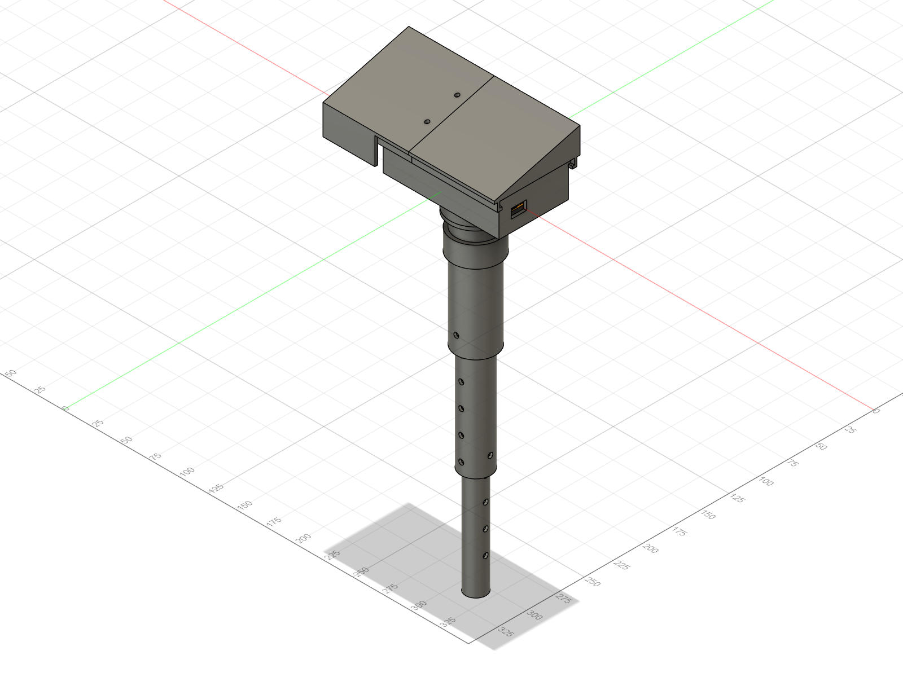
| Equipo | Claudio Martínez (código) · Diego Poupin (diseño 3D) · Mateo Candela (electrónica y testing) |
| Fecha | Noviembre de 2026 |
| Repositorio | https://github.com/mcandela123/esp32-railway-estanque |
| Página publicada | https://esp32-railway-estanque-production.up.railway.app |
En los sectores rurales de Culiprán y San Pedro, en la provincia de Melipilla (Región Metropolitana, Chile), no existe red de agua potable por tuberías. Las familias obtienen el agua de un pozo, desde donde una bomba eléctrica la sube a un estanque de almacenamiento (en este proyecto, de 2000 litros), que abastece la casa.
La bomba se enciende y se apaga a mano. Cuando nadie la apaga a tiempo, el estanque rebalsa y el agua se pierde: es un problema que comparten varios vecinos del sector. Como el pozo es la única fuente de agua del hogar, cada rebalse es agua que se desperdicia, además de energía eléctrica gastada sin necesidad. En el caso contrario, si nadie enciende la bomba, el estanque se queda vacío y la casa se queda sin agua.
El proyecto se enmarca en el ODS 6: Agua limpia y saneamiento, en particular en la meta 6.4 (aumentar el uso eficiente de los recursos hídricos) y en la meta 6.1 (acceso al agua para las familias). Evitar rebalses reduce el desperdicio de un recurso escaso en zonas sin red de agua potable.
| Requisito | Cómo se aborda |
|---|---|
| Apagar la bomba al llenarse el estanque | Flotador P35 + relé controlado por un ESP32 |
| Encender la bomba cuando el estanque se vacía, sin encendidos repetidos | Máquina de estados con retardo de arranque (10 s) y descanso mínimo del motor (60 s) |
| Ver el estado a distancia | Envío de datos por WiFi a un servidor en la nube con página pública |
| Resistir el uso en exterior | Encapsulado con techo de una sola agua, alero y riel |
| Llevar el sensor hasta el estanque | Tubo telescópico regulable de tres tramos |
| Fabricable con los recursos disponibles | Piezas de 10 cm o menos para la impresora 3D de la universidad; costo total de $12.000 CLP |
Un ESP32 lee un flotador P35 instalado en el estanque. Cuando el flotador indica que el estanque está vacío, el ESP32 activa un relé que enciende la bomba; cuando indica que está lleno, la apaga. El control funciona siempre de forma local, aunque no haya internet. Además, el ESP32 envía el nivel, el estado de la bomba y el estado del control a un servidor en Railway, que los guarda en una base de datos PostgreSQL en Aiven y los muestra en una página web pública.
ESP32 (flotador P35 + relé) ──POST HTTPS──> Railway (Express + página) ──SQL con SSL──> Aiven (PostgreSQL)
│ ▲
└── página local (mismo WiFi) └── celular o PC, desde cualquier lugar
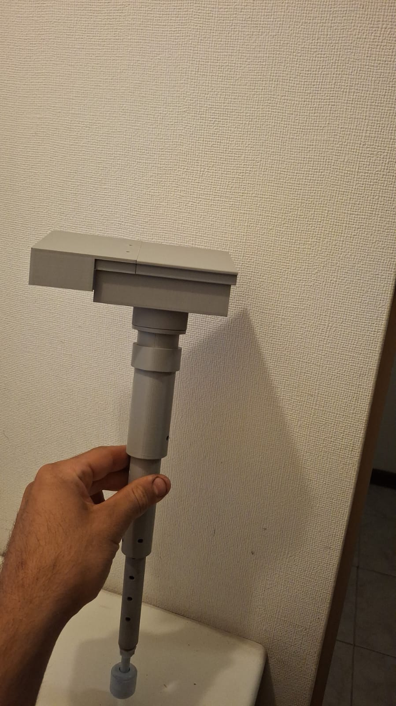
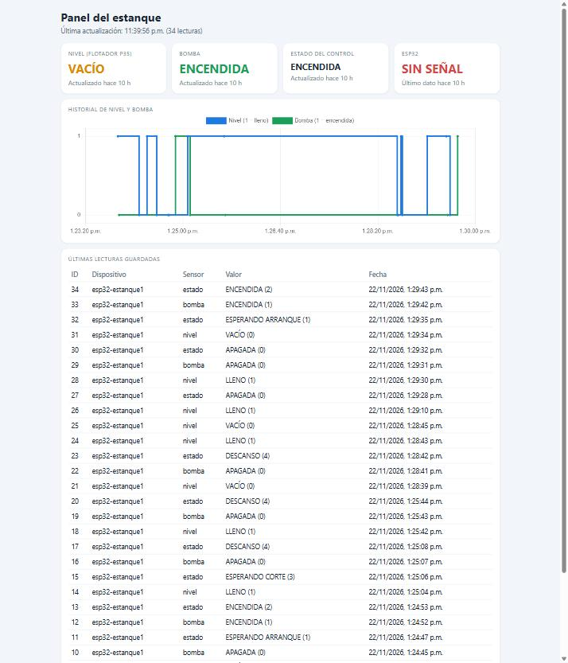
| Dato | Valores | Origen |
|---|---|---|
nivel | 1 = LLENO, 0 = VACÍO | Flotador P35 en GPIO 27 (pull-up interna) |
bomba | 1 = ENCENDIDA, 0 = APAGADA | Salida al relé (GPIO 26) |
estado | 0 Apagada · 1 Esperando arranque · 2 Encendida · 3 Esperando corte · 4 Descanso | Máquina de estados |
Los datos se envían apenas cambian y además cada 60 s como latido. El nivel de un estanque cambia en minutos, por lo que enviar más seguido solo llenaría la base de datos gratuita. Antes de decidir, el firmware filtra el flotador con un antirrebote de 80 ms, exige que marque vacío durante 10 s antes de encender y deja un descanso de 60 s después de cada corte para proteger el motor. Tras un corte de luz, el equipo parte en descanso para que la bomba no arranque de golpe.
El ESP32 tiene dos núcleos. El núcleo 1 ejecuta el control de la bomba; el núcleo 0 ejecuta una tarea aparte que envía las lecturas por HTTPS desde una cola de 30 posiciones, con hasta 3 reintentos. Así, si el WiFi o el servidor fallan, la bomba sigue cortando a tiempo. El WiFi se conecta sin bloquear y admite varias redes guardadas (WiFiMulti). El ESP32 también publica una página local con nivel, bomba, tiempos, llenados y últimos eventos, visible dentro del mismo WiFi.
El servidor es una aplicación Node.js 18 con Express desplegada en Railway. Guarda cada dato como una fila de la tabla lecturas (id, dispositivo, sensor, valor, creado_en) en PostgreSQL 18 (Aiven, plan gratuito). Este formato permite agregar sensores nuevos sin cambiar la base.
| Ruta | Función | Seguridad |
|---|---|---|
POST /api/lecturas | Guarda una lectura del ESP32 (responde 201) | Exige x-api-key (401 sin ella); valida campos y que el valor sea numérico y finito (400) |
GET /api/lecturas | Entrega las últimas lecturas (filtro opcional ?sensor=) | Consultas SQL parametrizadas |
GET /api/salud | Comprueba la conexión con la base | — |
La página pública muestra el nivel actual, la bomba, el estado del control, un gráfico escalonado del historial y una tabla de lecturas, y se actualiza cada 5 s. Si no llegan datos en 3 minutos, muestra SIN SEÑAL, lo que permite detectar un corte de luz, de WiFi o una placa desconectada. Con los datos reales se calcularon indicadores como la cantidad de encendidos de la bomba, la duración de cada ciclo y el tiempo de confirmación antes de encender (sección 6).
.env en .gitignore, firmware publicado con valores de ejemplo y revisión del historial completo de Git.| Componente | Justificación |
|---|---|
| ESP32 Dev Module (en PCB de la universidad) | WiFi integrado para enviar por HTTPS, dos núcleos (control y comunicación separados) y entradas con pull-up interna. Se programa con Arduino IDE, como pide la guía del curso. |
| Flotador P35 | Contacto seco: no necesita alimentación ni calibración y no le afectan la turbidez ni la espuma, que sí afectan a un sensor ultrasónico. Basta una entrada digital y GND. No tiene polaridad. |
| Relé SRA-05VDC-CL | SPDT con bobina de 5 V y 42 Ω (~120 mA). Separa los 220 V de la lógica de 3,3 V. Como un pin del ESP32 no entrega esa corriente, la PCB lo activa con un transistor y un diodo de protección. El equipo verificó que soporta los 220 V de la bomba. |
| Bomba 220 V | Funciona directo con la red; el relé solo interrumpe la fase. |
| Cargador USB 5 V | Alimenta el ESP32 y la bobina del relé. |
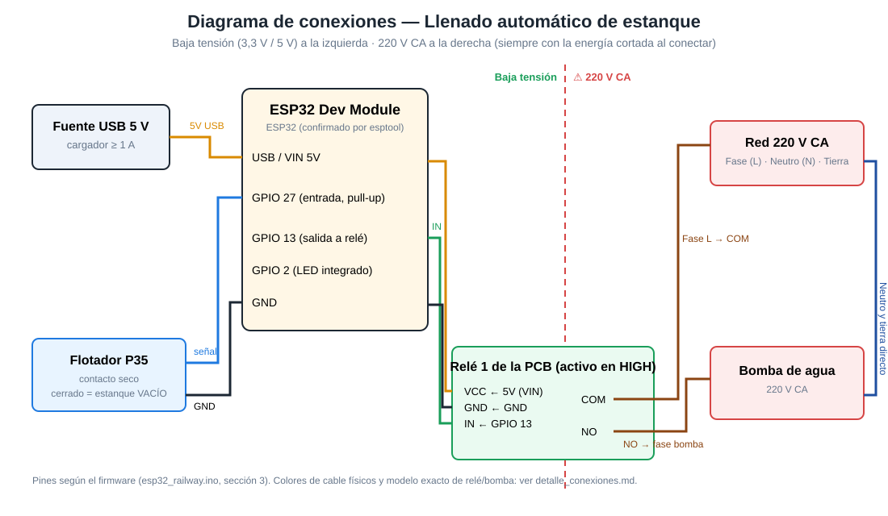
| Conexión | Pin / borne | Cable |
|---|---|---|
| Flotador P35 | GPIO 27 y GND | Morado y verde |
| Relé | VCC ← 5 V (VIN) · GND · IN ← GPIO 26 (activo en LOW) | — |
| Bomba | Fase → COM del relé · NO → fase de la bomba · neutro y tierra directos | Amarillo |
| Componente | Cant. | Costo CLP | Origen |
|---|---|---|---|
| Placa PCB con ESP32 y relés | 1 | 0 | Fabricada por la universidad |
| Flotador P35 | 1 | 6.000 | Comprado por el equipo |
| Bomba 220 V | 1 | 6.000 | Comprada por el equipo |
| Impresión 3D del encapsulado (7 piezas) | 1 | 0 | Impresa por la universidad |
| Cargador, cables, tornillos M3 y pasadores | — | 0 | Sin costo para el equipo |
| Total | 12.000 |
El encapsulado se modeló en Autodesk Fusion 360 en el mismo archivo que la PCB, por lo que el gemelo digital incluye la placa con sus volúmenes reales. Como la impresora disponible imprime hasta 10 cm por eje, el diseño se dividió en 7 piezas con uniones para armarlas después de imprimir.
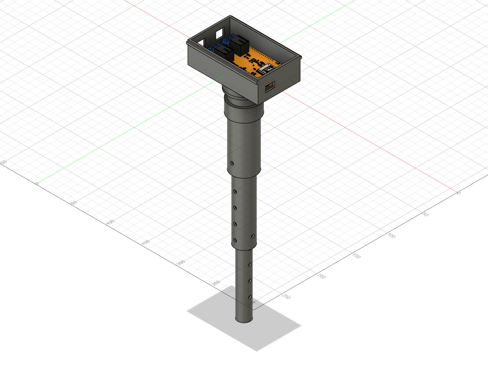
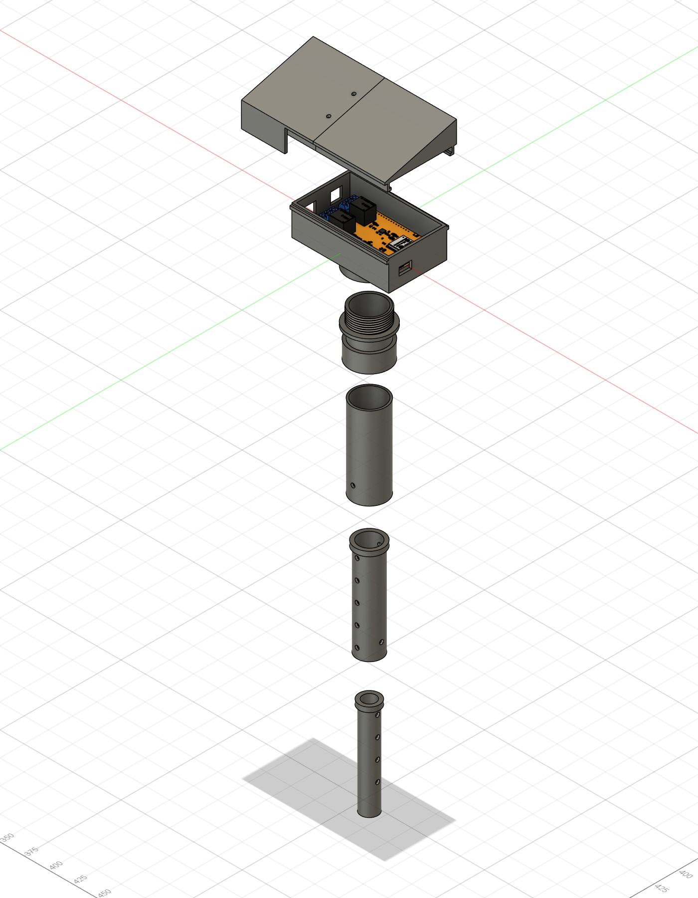
| Pieza | Medidas (mm) | Unión |
|---|---|---|
| 01 Caja base | 100 × 64 × 46 | Rosca hembra M36x2 abajo; riel del techo arriba |
| 02 y 03 Techo A y B | 74 × 74 × 46 · 89 × 74 × 30 | Lengüeta de 30 mm, 2 tornillos M3 y adhesivo |
| 04 Acople del tubo | 44 × 44 × 47,5 | Rosca macho M36x2; casquillo de 15 mm |
| 05 Tramo del tubo 1 | Ø34 × 85 | Pegado en el casquillo (holgura 0,2 mm) |
| 06 y 07 Tubos 2 y 3 | Ø29 × 100 · Ø21 × 100 | Telescópicos, con pasadores de 4 mm; rosca M10x1.5 en la punta |
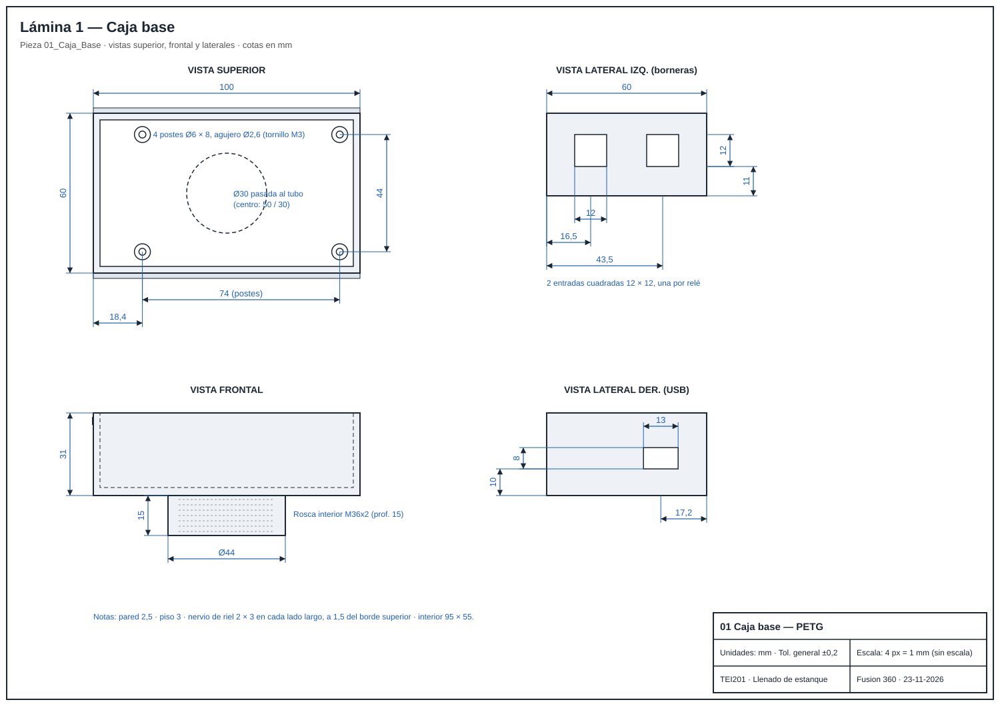
La Figura 1 muestra las piezas impresas por la universidad armadas: el techo encaja en el riel, la rosca M36x2 une la caja con el tubo y los tramos telescópicos deslizan como en el modelo.
Con la placa conectada al WiFi y a Railway, se movió el flotador a mano durante unos 6 minutos y se revisaron el monitor serie y la página publicada. La base de datos registró 34 lecturas (13 de nivel, 8 de bomba y 13 de estado), todas con respuesta 201.
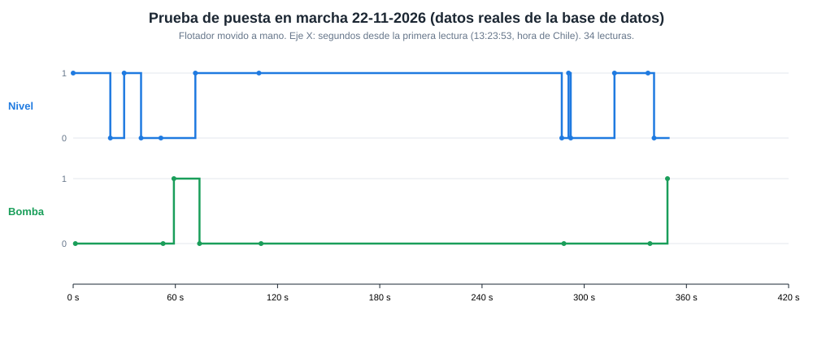
| Verificación | Resultado |
|---|---|
| El ESP32 envía a Railway y los datos quedan en PostgreSQL | ✔ 34 filas guardadas |
| La bomba espera antes de encender | ✔ Pasó a Esperando arranque y encendió unos 10 s después |
| La bomba se apaga al marcar lleno | ✔ Se apagó alrededor de 1 s después de que el flotador marcó LLENO |
| Descanso de 60 s | ✔ El siguiente encendido fue recién minutos después |
| Oscilaciones del flotador no encienden la bomba | ✔ Tres cambios rápidos de nivel durante el descanso no la encendieron |
| Aviso cuando la placa deja de enviar | ✔ La página mostró SIN SEÑAL al desconectarla |
| Falla | Causa | Acción |
|---|---|---|
| La placa no se conectaba al WiFi | Nombre de red que no existía en ese lugar | Lista de varias redes (WiFiMulti) |
| Error al cargar el código | Placa equivocada en el IDE (ESP32-C3/S2) | Usar siempre ESP32 Dev Module |
| El servidor no conectaba a la base | URI de Aiven copiada sin la contraseña | Se corrigió la variable en Railway |
| Horas de la base algo desfasadas | Se registra la hora de llegada (~1,2 s por envío) | Documentado en el análisis |
El protocolo define tres pruebas formales: A (20 ciclos de llenado y corte con agua real), B (llegada de datos y recuperación tras cortar el WiFi) y C (tiempo entre un cambio del flotador y su aparición en la página). Estas pruebas aún no se ejecutan. La puesta en marcha entrega evidencia preliminar de que el sistema responde al problema: la bomba se apaga sola al llenarse, lo que evita el rebalse, se enciende sola al vaciarse y el estado se puede ver a distancia. Su limitación es que se movió el flotador a mano durante pocos minutos, sin un llenado real.
| Iteración 1 | Iteración 2 | Iteración 3 | |
|---|---|---|---|
| Fecha | hasta 16-11-2026 | 16-11-2026 | 21–22-11-2026 |
| Datos | Solo monitor serie por cable | Página local (mismo WiFi) | Página local y página pública con historial |
| Comunicación | — | Una red WiFi | Varias redes; envío en otro núcleo con cola y reintentos |
| Encapsulado | Caja con tapa plana | Techo a dos aguas → techo de una sola agua con alero | 7 piezas de 10 cm o menos, impresas |
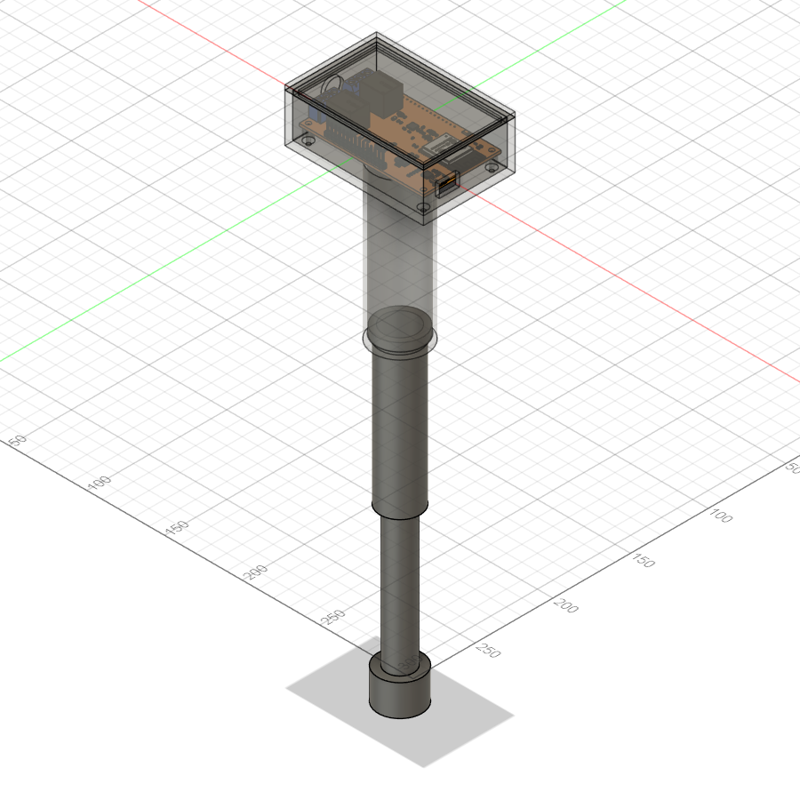
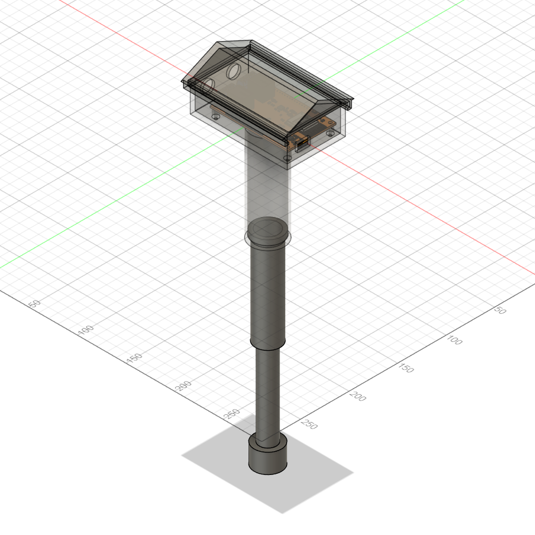
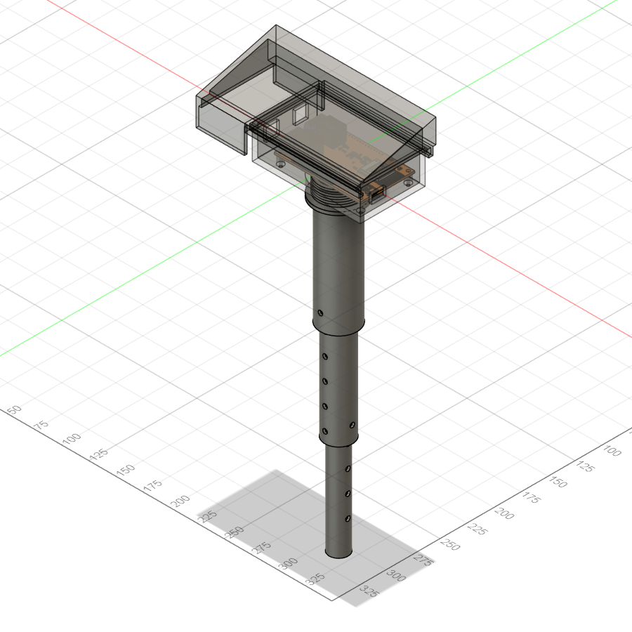
Se diseñó y construyó un sistema que automatiza el llenado de un estanque con agua de pozo: la bomba se apaga sola al llenarse, lo que evita los rebalses que hoy desperdician agua en Culiprán y San Pedro; se enciende sola al vaciarse, con protecciones para el motor; y la familia puede revisar el estado desde cualquier lugar. El sistema integra software (firmware, servidor, base de datos y página pública), hardware de bajo costo ($12.000 CLP pagados por el equipo) y un encapsulado impreso pensado para exterior y para ser reparado.
Limitaciones: el flotador indica solo lleno o vacío, no litros; falta ejecutar las pruebas formales con agua real; y el plan de prueba de Railway dura 30 días.
Trabajo futuro: ejecutar las pruebas A a C en un estanque real; agregar un sensor de nivel continuo para conocer los litros; avisos al celular cuando el estanque se vacía o la placa pierde señal; imprimir en PETG para mayor resistencia al sol y la humedad; y probar el equipo con vecinos del sector.
El detalle completo de fuentes y versiones está en FUENTES.md del repositorio.